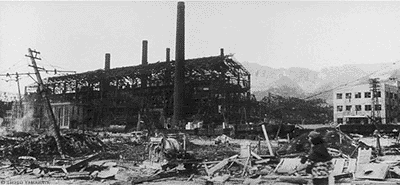

|
|
| Home | About | Topics | Rejects | Abortions |
This is an archive site only. It is no longer maintained.
You can not post comments. You can not make an account. Your email
will not be read. Please read this
page if you have questions.
|
||||||||||
|
||||||||||
This is an archive site only. It is no longer maintained.
You can not post comments. You can not make an account. Your email
will not be read. Please read this
page if you have questions. |
||||||||||
|
|
It seems hard to believe that less than 60 years ago we were naive enough to
believe everything our government told us without question. It is even harder
to imagine that today forces still exist in Washington who will stop at nothing
to prevent the dissemination of pure, unadulterated Truth. It is time for the
outrageous lies propagated for the past half century to be put to rest, and
time for the real story behind one of the United States' greatest cover-ups
to be told. We at Adequacy have uncovered incontrovertible proof
that the so-called Nuclear "Holocaust" in Hiroshima and Nagasaki was
in fact staged in a California movie studio.
|
|||
By Summer of 1945 it had become apparent to Harry S. Truman and the rest of the US military leadership that they were not going to be able to defeat Japan the same way they crushed Germany. For starters, the Russians weren't very interested in helping them this time around. Adding to this was the difficulty of landing an invasion force on Japanese shores. Sure, there were similarities between crossing the English channel and crossing the Sea of Japan, but when the commanders took a closer look they realized that the Korea Strait was a whole bunch bigger than the Strait of Dover. Further, the military hadn't even gotten around to stocking the Korean Peninsula with US armed forces yet. There appeared to be no reasonable way to conquer the island nation. Over on the other side of the battle line, Emperor Hirohito was getting a might bit sick of the war. The way he saw it, Japan's future would be better served by focusing on the rapidly developing field of consumer electronics than it would by dominating the Asian Pacific militarily. He was also running out of Kamikaze pilots. In late June he secretly met with Truman in Honolulu to craft a plan.
Hirohito was ready to surrender, but there was the issue of saving face. He knew his countrymen would never accept the idea that they had simply made a bad decision, so he and Truman came up with a way to make it appear that the Japanese surrender was completely justified. Under the influence of stiff cocktails, they invented a preposterous scientific theory involving splitting invisible particles in such a way that the resultant explosion was thousands of times more powerful than TNT. Then they would tell the world of 2 bombs being loaded with these invisible particles and then dropped on Japanese cities, completely "destroying" them in the process. As a final touch they named the project after the Manhattans they were drinking. All of the above is not simply idle speculation on our part. We have uncovered concrete proof that the "bombings" of Hiroshima and Nagasaki were faked.  In the picture above you see a destroyed factory, ostensibly located in Hiroshima and destroyed by an "Atom" bomb if we are to believe the photographer. However, utilizing highly specialized photographic analysis software previously only available to the CIA, we have discovered that this photo was not taken in Japan at all. The enlarged detail below reveals it to be set in a city on the opposite side of the Pacific: Yes, the photo is a fake. Based on a detailed review of shadow angles and the location of the sign in the background it is plainly apparent that this shot was taken on Warner Brothers' Lot 5 in Hollywood California. When we further investigate the Hollywood connection other irregularities start to crop up. As we all know from our history classes, the pilot of the plane Enola Gay was a man named Paul Warfield Tibbets, Jr. According to his biography, Tibbets was an Air Force man and a pilot through and through. Surely a man such as this would have no connections with the myth-making in Hollywood, right? Wrong. As we can plainly see from the Internet Movie Database, Paul Tibbets is in fact a longtime Hollywood insider. Pilot? No, but he plays one in Government hoaxes!
Noted World War II historian and Hollywood pundit Elenchos offers further insight into how the movie industry works, and how we can use this knowledge to further unveil this conspiracy: [A]ll the names [are obviously] made up. Fat Man? Little Boy? Please. What kind of names are those for bombs? Or Tibbits. Absurd. And the "Sea of Japan"? That's like one of those placeholders you see in a movie script that sometimes never get replaced. You see them when the credits roll: "2nd woman", "Cashier in Department Store". I've heard rumors that in the original plan, the names Hiroshima and Nagasaki were just "Major Industrial Seaport" and "Second Major Industrial Seaport". You sometimes still see these titles used, in places where they neglected to replace them with the names they later made up for the "destroyed" cities.Over in Japan the government was making its own magic. The image you see here is the Atomic Bomb Memorial Dome, allegedly taken shortly after the bombing in Hiroshima. This stark photograph is supposed to convey the devastation in that city with the one standing building embodying the strength and hope Hiroshima retained. This was a clever bit of trickery on the part of the Japanese, but recently unveiled archived items prove that this shot, like the one done in Hollywood, is a fake. Several years ago a group of Japanese school children from Tokyo were on a field trip in Osaka visiting some of the many national treasures that city holds. At one point a few of them became separated from their group and wandered into a little-used basement portion of the building they were in. Behind a mysteriously unlocked door they discovered the smoking gun: They found one of the scale models that was used to create the fake devastation photos.
When the students attempted to alert others to their find they were quickly hushed by the government. Unfortunately, the proverbial cat had already escaped form his sacked confinement and people began to ask questions. Japanese officials managed to avoid the issue for months by brushing it off as "paranoid delusions", but eventually the demand became too great for them to ignore. In an attempt to quiet the restless public, a great ceremony was scheduled to be held at the Dome itself in Hiroshima to mark what was supposed to be the 50th anniversary of the bombing there. Press from around the world was invited. When the event arrived the press was present in full force, enticed at the possibility that the 50 year long lie would be revealed. Remarkably though, there was indeed a dome, looking much like it did in the old pictures. The conspiracy advocates were set back and unsure of where they stood until a Hiroshima resident leaked the photo below in late 1999. The Atomic Dome was in fact new, as demonstrated by the construction scaffolding which surrounded it only a few short years ago.
|